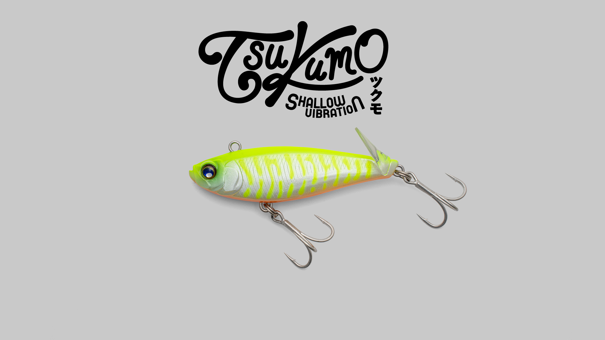
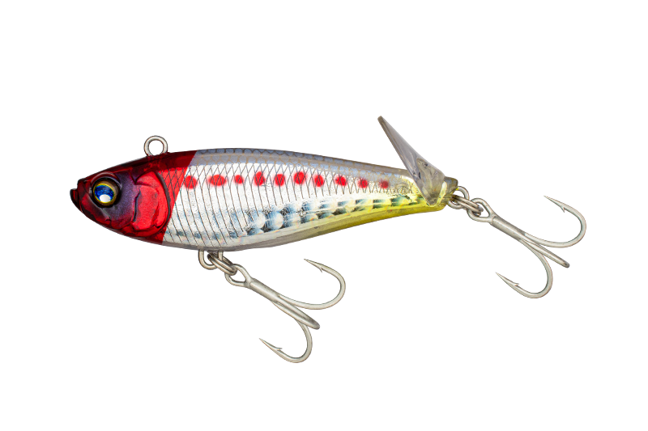
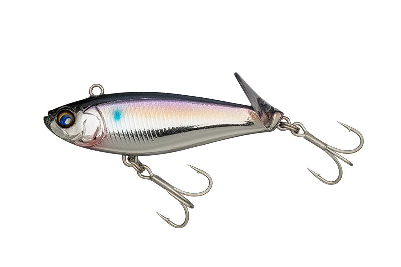
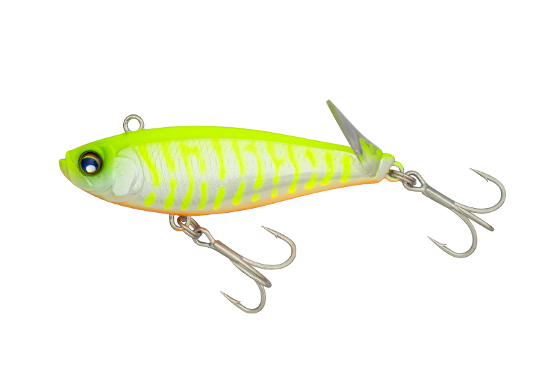
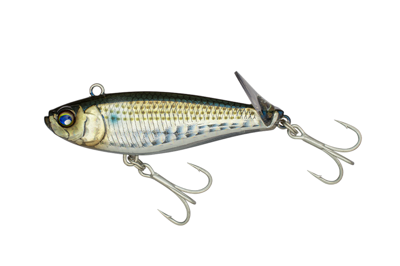

ツクモ
（TSUKUMO 56/66）
ツクモ（TSUKUMO 56/66）はJACKALL（ジャッカル）のシャローバイブレーションです。
キャッチコピーは「水深『1m』を攻めるバイブレーション」。バイブレーションの激しい振動アクションはそのままに、通常のバイブレーションでは底を擦ってしまう激浅エリアでもボトムを切って攻められるのが最大の魅力です。

画像出典:JACKALL公式HP
スペック
- メーカー
- JACKALL（ジャッカル）
- タイプ
- シャローバイブレーション（シンキング）
- 全長
- 56mm／66mm
- 自重
- 11.5g（56）／16.5g（66）
- レンジ
- 水深1m前後の激浅エリアに対応
- ターゲット
- シーバス
- 価格
- 1,738円（56）／1,848円（66）（税込）
▼今すぐチェック

ツクモの特徴
バイブレーションの振動はそのままに、泳ぐレンジだけを浅くしたシャロー特化モデル
-
水深1m前後の激浅エリアでもボトムを切れる
通常のバイブレーションでは底を擦ってしまう水深1m前後のシャローでも、ボトムから離して引ける。遠浅の干潟や干潮時の河川など、これまでバイブレーションを投げられなかった場面で使えるのが最大の強み。
-
テールのアッパーリップで浮かせつつ飛距離はそのまま
テール部のアッパーリップがリトリーブ時に水を受け、高比重ボディを浮き上がらせてシャローレンジをキープする。キャスト時は抵抗になりにくく飛行姿勢も安定するので、軽量・小型モデルに頼らずに飛距離とアピール力を保てる。
-
エイのスレ掛かりを減らせる
ボトムを切って泳がせられるので、河川や干潟で起きやすいエイのスレ掛かりを減らせる。シャローのバイブレーションゲームで地味にうれしいポイント。
ツクモの使い方
基本は投げて巻くだけ。通常のバイブレーションと同じ感覚で使えます。
巻くスピードを上げるとより浅いレンジを通り、ロッドを立てるとさらに浅く探れます。リフト＆フォールでは素早く浮き上がり、リップの抵抗でゆっくり沈むので、浅場でも上下の誘いを入れられるのがポイントです。
ツクモの得意な状況
遠浅の干潟や干潮時の河川、シャローのワンドなど、水深1m前後の浅いエリアが最大の出番。
通常のバイブレーションとの違いは泳ぐレンジだけなので、「バイブレーションで攻めたいけれど浅すぎて底を擦る」という場面で、そのまま持ち替えて使えます。
ワンポイント
レンジは巻くスピードとロッドの角度で調整するのが基本。
底を擦り始めたら巻きスピードを少し上げるかロッドを立て、逆に浮きすぎる時はロッドを寝かせてゆっくり巻くと、ボトムすれすれのレンジをキープしやすくなります。
ツクモのサイズの使い分け
| モデル | 全長／自重 | 得意な場面 |
|---|---|---|
| ツクモ56 | 56mm／11.5g | よりシャローを引きやすい。浅い干潟や小規模河川に |
| ツクモ66 | 66mm／16.5g | より飛距離を出しやすい。広い干潟や大河川の河口に |
どちらも全8色の同じカラー展開。浅さを優先するなら56、飛距離を優先するなら66と、フィールドの広さで選ぶのがオススメです。
人気カラー
ツクモは56・66ともに全8色展開。シャローのシーバス狙いでオススメのカラーを厳選して紹介します。

レッドヘッド定番中の定番。濁りや夜の釣りでもシルエットを出しやすい。

ボラメッキUVシャローに多いボラ（イナッコ）パターンに合わせやすいメッキ系。日中のフラッシングに。

グローチャートパールグロー入りのチャート系。マズメや夜間、濁り潮でのアピールに。

イナッコ干潟や河川で群れるイナッコに合わせたナチュラルカラー。澄み潮やスレた場面に。
画像出典:JACKALL公式HP
ツクモに似ているルアー
-
フラペンシャロー S85
マリア
詳細はこちら＞
全長85mm・自重12gのシャロー用フラップペンシル。フラップが水を受けてレンジを浅く保つ設計で、内湾の干潟や河川・河口のシャローを攻めるという狙いどころがツクモと共通する。
-
ジナリ65
ジャッカル
詳細はこちら＞
同じジャッカルのバイブレーション。ウェイトをボディ外に出したO.M.S（アウトメタルシステム）で根掛かり回避性能を高めたモデルで、浅場のツクモに対して、障害物の多いエリアや深場・急流で使い分けたい1本。
-
 ナレージ50
ブルーブルー
詳細はこちら＞
ナレージ50
ブルーブルー
詳細はこちら＞
全長50mm・自重12gのバイブレーション。ツクモ56とほぼ同じサイズ感で、リトリーブ速度でレンジを調整しながら探るという使い方が近い。